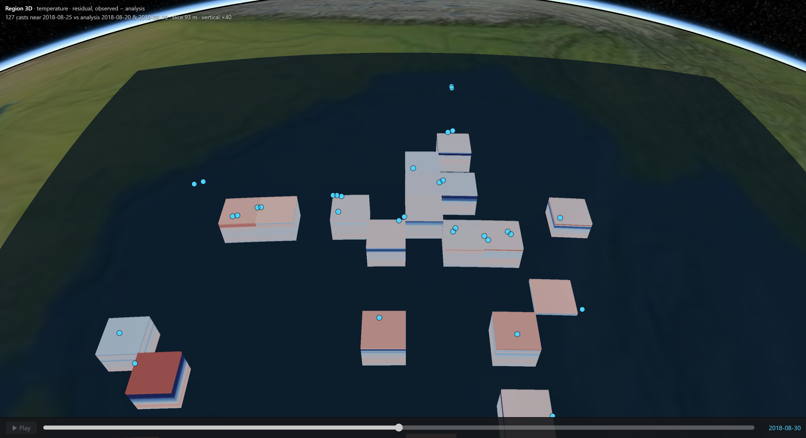

For the cyclone forecaster
+16.0
kJ/cm² — model minus measured cyclone heat potential along the independent glider track (95 casts, one deployment; measured mean 9.5). Against Argo, which the model already absorbs: −3.5.
- Fuel, in the unit already usedheat above 26 °C, per float and per glider cast
- 20 °C isotherm in one clickthe standard proxy for how deep the warm layer goes
- Model and truth side by sideno second program, no copying numbers between tools
- Confidence visibleuncertain water drawn faint; unmeasured water drawn empty
For INCOIS operations
- Search and rescue, fisheries, climatecurrents and temperature at any depth, in the same view
- New instruments without re-engineeringdrop a CSV of casts on the globe; it is paired with the model at once
- Open standardsWMS layers open in QGIS and national portals
For students, public and policy
4.86%
of the Bay's water column had a measurement in this window. Shown honestly, that is itself the case for more floats — a sentence a policymaker can repeat.
- True scale in one clickthe Bay really is a film of water: 2 km deep, 2,400 km wide. Then 40×, to read it
- From planet to profileglobe, to region, to one float's dive, in three clicks
- Runs in a school's browserexhibitions, e-learning and outreach, as the brief asks
- Plain labels, real dataevery colour has a legend, every point a source file
Where it goes next
- More regions and yearsthe region and window are configuration, not code
- More sensorsCTD, moorings, HF radar, ADCP: each one parser
- Machine-learning productsany gridded output renders as another volume
